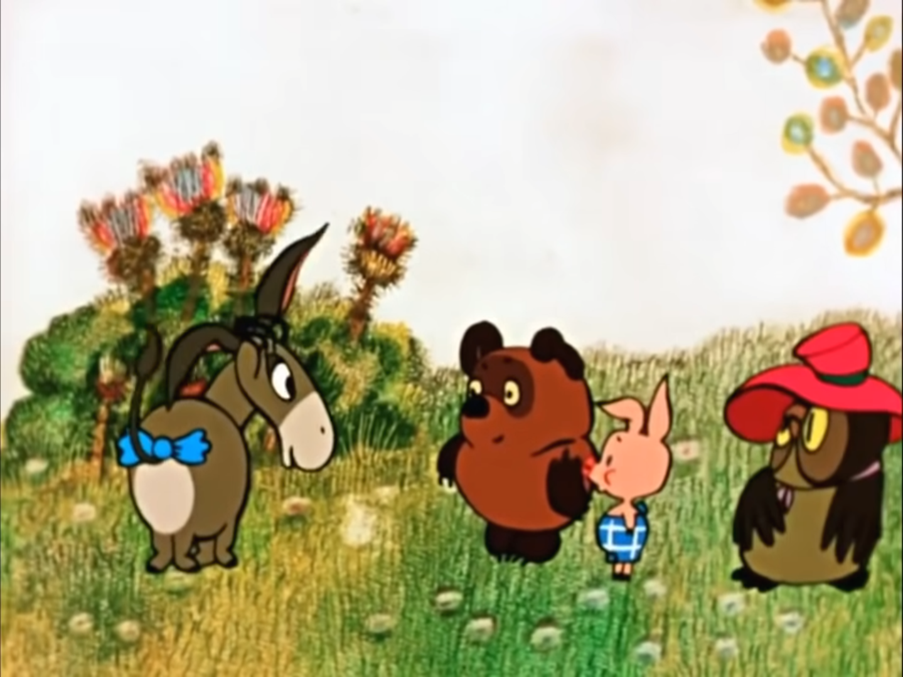

Жанр:
Мультипликационный фильм.Рисованная в цвете мультипликация о Винни-Пухе и всех его милых друзьях,
созданных английским писателем
Александром Милном.
Роли озвучивали:
Евгений Леонов,
Владимир Осенев,
Ия Савина,
Эраст Гарин,
Зинаида Нарышкина,
Анатолий щукин.
Режиссер: Фёдор Хитрук
Сценаристы: Борис Заходер, Фёдор Хитрук.
Оператор: Н.Климова.
Композитор: Моисей (Мечислав) Вайнберг.
Художники: Эдуард Назаров, Владимир Зуйков.
Год выпуска: 1969, 1971, 1972
Этого доброго, умильного толстячка, с подчас хулиганскими замашками, знают
и любят почти… да что там почти… Его любят абсолютно ВСЕ!
Первый мультик о приключениях Винни и его друзей вышел на экраны нашей страны в далеком 1969 году. С тех пор
песенки и фразы из этого мультика стали нашим народным достоянием, а самого Винни-Пуха без преувеличения можно
назвать отечественным «национальным героем».
Как появился Винни-Пух?
Все знают, что медвежонок Винни-Пух — исконно англоязычный персонаж, «любимое
детище» английского писателя А.Милна. Англичанин вдохновился идеей записать сказки, которые он
рассказывал на ночь сыну. Главными персонажами тех сказок были сам сын писателя – Кристофер
Робин и его плюшевый медведь – Винни-Пух.
В 1961 году по мотивам книги
Милана
американскими аниматорами были созданы первые
в мире мультфильмы о медвежонке Винни-Пухе и его друзьях. А книга про веселые приключения Пуха
и его друзей была радостно принята детишками всего мира.
Творческий коллектив
«Союзмультфильма»
тоже не мог обойти вниманием столь популярную в советских
семьях сказку. И группа мультипликаторов приступила к созданию знаменитой отечественной
трилогии приключений медвежонка.

«Подарок в день рождения»
Когда на Западе узнали, что в Советском Союзе взялись за перевод, а после и
экранизацию Винни-Пуха, некоторые деятели культуры и искусства подумали невесть что.
Например, писательница Памела Трэверс(автор книги о Мэри Поппинс), сказала так:
«Одному Богу известно, во что превратили Винни-Пуха эти русские. Но
я точно знаю: они нарядили его комиссаром, нацепили на него патронташ и сунули
его в ботфорты».